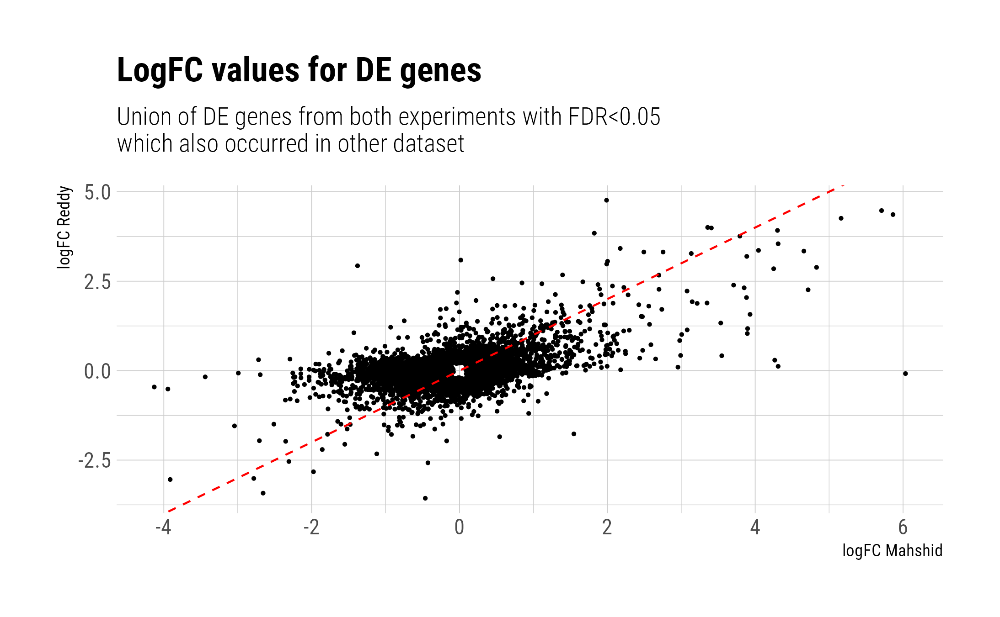
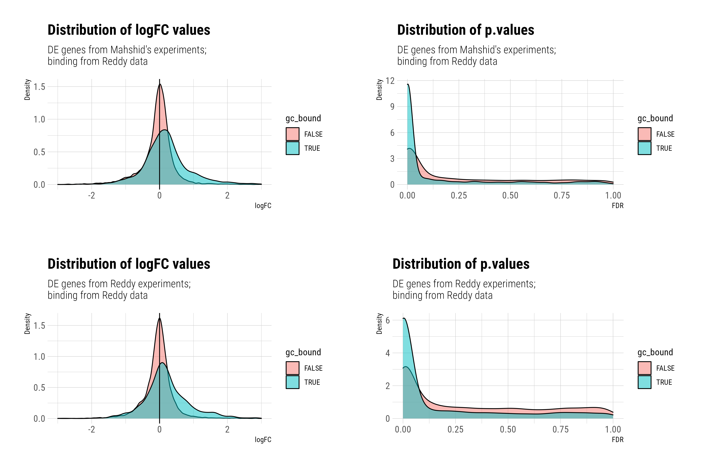
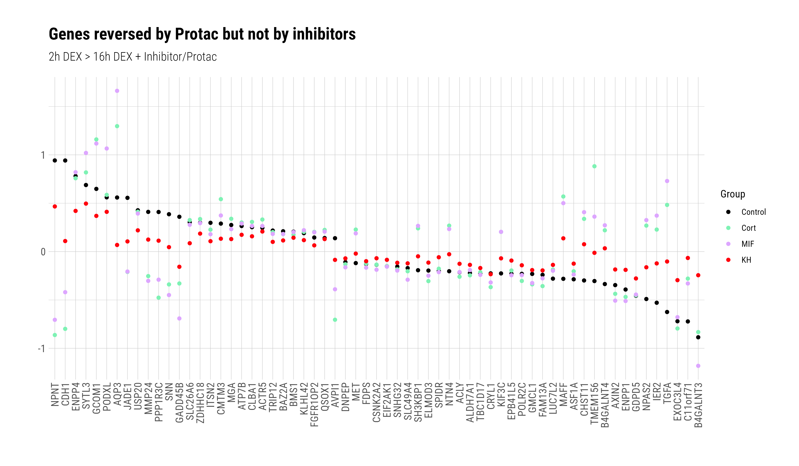
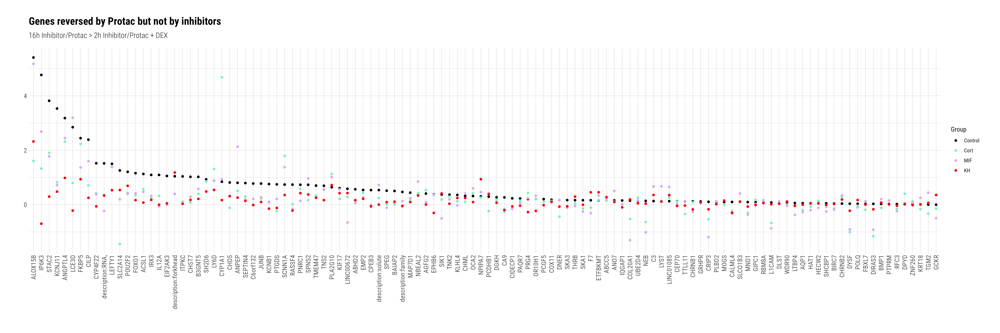
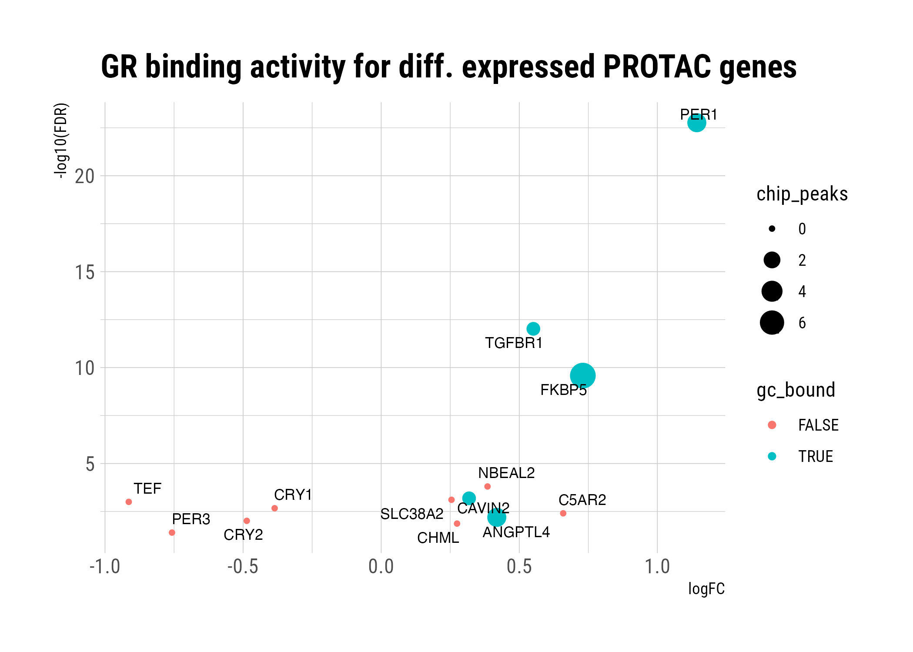
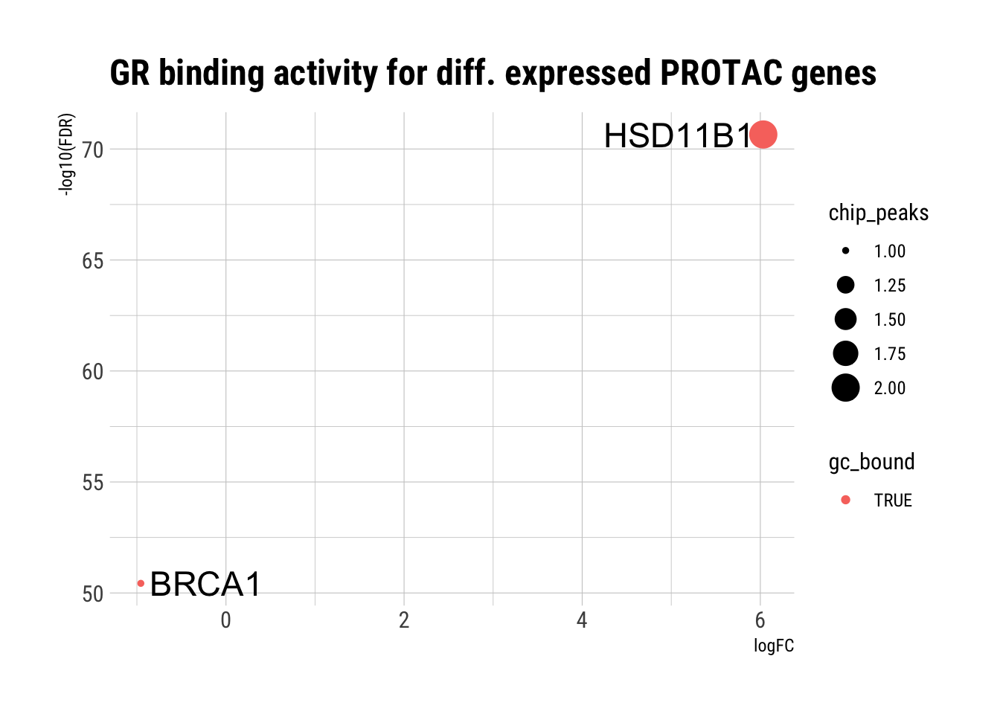
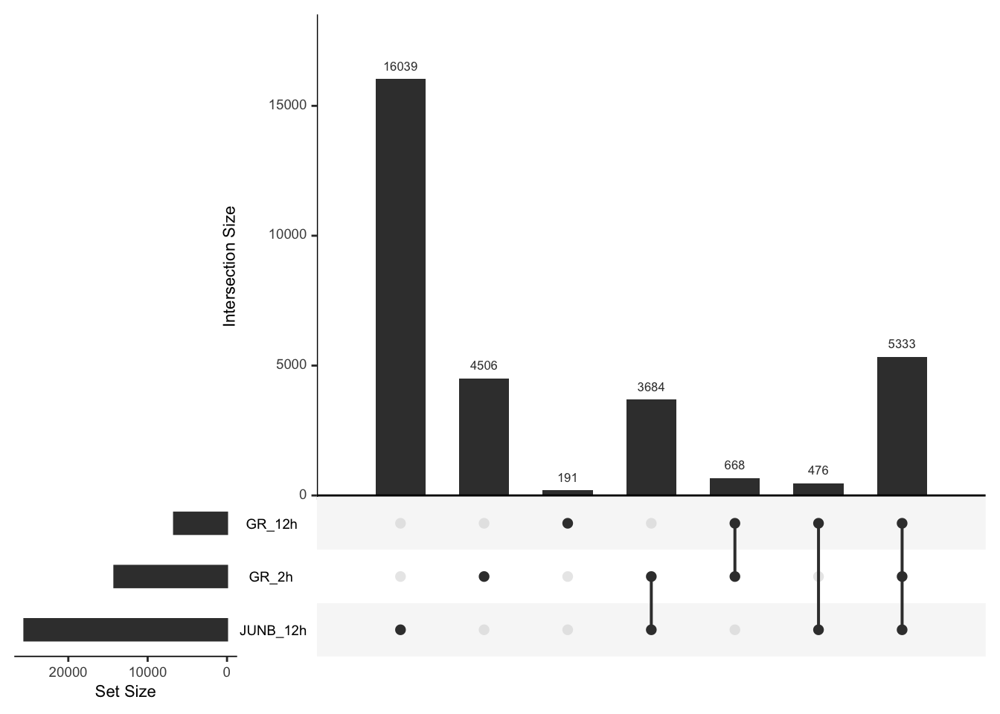
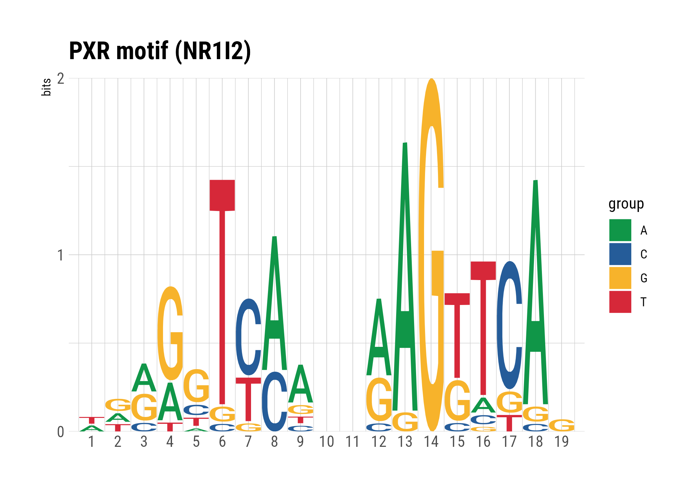
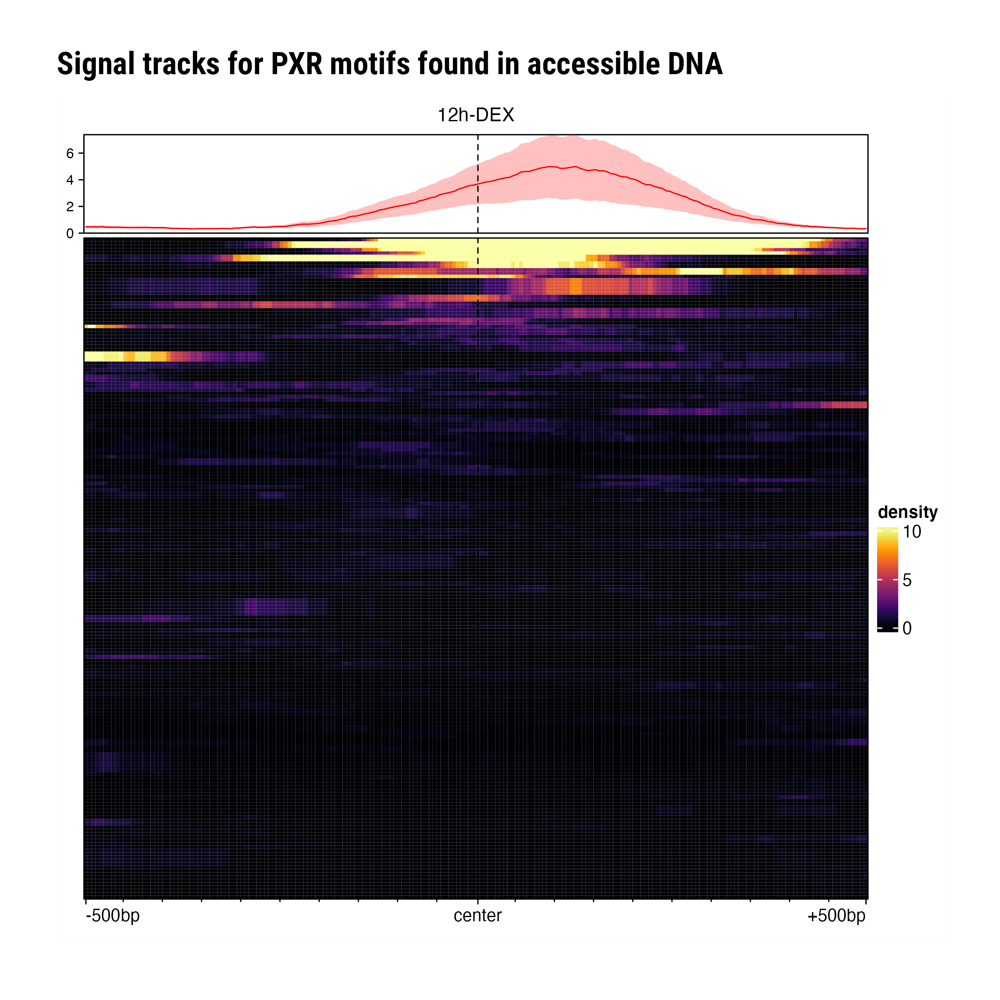

Analysis
Dominique Paul
2022-06-22
Last updated: 2022-06-22
Checks: 6 1
Knit directory: GR-PROTAC-analysis/analysis/
This reproducible R Markdown analysis was created with workflowr (version 1.7.0). The Checks tab describes the reproducibility checks that were applied when the results were created. The Past versions tab lists the development history.
The R Markdown file has unstaged changes. To know which version of the R Markdown file created these results, you’ll want to first commit it to the Git repo. If you’re still working on the analysis, you can ignore this warning. When you’re finished, you can run wflow_publish to commit the R Markdown file and build the HTML.
Great job! The global environment was empty. Objects defined in the global environment can affect the analysis in your R Markdown file in unknown ways. For reproduciblity it’s best to always run the code in an empty environment.
The command set.seed(20220515) was run prior to running the code in the R Markdown file. Setting a seed ensures that any results that rely on randomness, e.g. subsampling or permutations, are reproducible.
Great job! Recording the operating system, R version, and package versions is critical for reproducibility.
Nice! There were no cached chunks for this analysis, so you can be confident that you successfully produced the results during this run.
Great job! Using relative paths to the files within your workflowr project makes it easier to run your code on other machines.
Great! You are using Git for version control. Tracking code development and connecting the code version to the results is critical for reproducibility.
The results in this page were generated with repository version 207afa6. See the Past versions tab to see a history of the changes made to the R Markdown and HTML files.
Note that you need to be careful to ensure that all relevant files for the analysis have been committed to Git prior to generating the results (you can use wflow_publish or wflow_git_commit). workflowr only checks the R Markdown file, but you know if there are other scripts or data files that it depends on. Below is the status of the Git repository when the results were generated:
Ignored files:
Ignored: .DS_Store
Ignored: analysis/.DS_Store
Ignored: analysis/docs/.DS_Store
Ignored: data/.DS_Store
Ignored: data/EOS_files/
Untracked files:
Untracked: code/helper_functions.R
Untracked: data/reddy_bed_ATAC_12h_DEX.bed.gz
Untracked: data/reddy_bed_ATAC_control.bed.gz
Untracked: data/reddy_bed_DEX12h_r123.bed
Untracked: data/reddy_bed_DEX2h_r123.bed.gz
Untracked: data/reddy_bed_JUNB_DEX12h_r123.bed
Untracked: data/reddy_bigwig_DEX12h_r123.bigWig
Untracked: data/reddy_bigwig_DEX2h_r123.bigWig
Untracked: data/reddy_bigwig_JUNB_DEX12h_r123.bigWig
Untracked: data/reddy_rna_DEX12h.tsv
Untracked: data/reddy_rna_DEX12h_r1.tsv
Untracked: data/reddy_rna_DEX12h_r2.tsv
Untracked: data/reddy_rna_DEX12h_r3.tsv
Untracked: data/reddy_rna_DEX12h_r4.tsv
Untracked: data/reddy_rna_DEX12h_transcript.tsv
Untracked: data/reddy_rna_control.tsv
Untracked: data/reddy_rna_control_r1.tsv
Untracked: data/reddy_rna_control_r2.tsv
Untracked: data/reddy_rna_control_r3.tsv
Untracked: data/reddy_rna_control_r4.tsv
Untracked: data/results/
Untracked: output/Q2_GR_bound_DE_genes.xlsx
Untracked: output/Q4_KH_DE_GR_bound.xlsx
Unstaged changes:
Modified: .gitignore
Modified: _workflowr.yml
Modified: analysis/01_download_files.Rmd
Modified: analysis/02_exploratory_analysis.Rmd
Modified: analysis/Q1-Gene-overlap.Rmd
Modified: analysis/Q2-TF-Binding-to-DE-genes.Rmd
Modified: analysis/Q3-PROTAC-reversal.Rmd
Modified: analysis/Q4-GR-binding-PROTAC-genes.Rmd
Deleted: analysis/Q6-JUNB-GR-overlap.Rmd
Modified: analysis/Q7-PRX-sequences.Rmd
Modified: analysis/about.Rmd
Modified: analysis/admin.Rmd
Modified: analysis/index.Rmd
Note that any generated files, e.g. HTML, png, CSS, etc., are not included in this status report because it is ok for generated content to have uncommitted changes.
These are the previous versions of the repository in which changes were made to the R Markdown (analysis/02_exploratory_analysis.Rmd) and HTML (docs/02_exploratory_analysis.html) files. If you’ve configured a remote Git repository (see ?wflow_git_remote), click on the hyperlinks in the table below to view the files as they were in that past version.
| File | Version | Author | Date | Message |
|---|---|---|---|---|
| Rmd | 207afa6 | dominique-paul-uzh | 2022-06-21 | added question 3 |
| html | 207afa6 | dominique-paul-uzh | 2022-06-21 | added question 3 |
Question 1: Similarity of our RNA data with the Reddy data
Q: Which gene expressions have similar patterns of up-regulation (control vs. Dex) in our data compared to the Reddy data?
In our experiments we compared samples from a control experiment with samples that were treated for 18 hours with DEX. Besides a control, the Reddy lab performed a similar experiment where they treated cells with DEX for 12 hours. This is the closest comparison to our data.
Planned approach: Check which genes are differentially expressed in their data and create a Venn-diagram for comparable experiments with the differentially expressed genes from our analysis.
Results
q1_data <- readRDS(file="../data/EOS_files/Q1_EOS.rds")
names(q1_data)[1] "Reddy_all" "Reddy_significant" "Mahshid_all"
[4] "Mahshid_significant" "union_DE_genes" "logFC_plot_data" n_genes_plot <- dim(q1_data[["logFC_plot_data"]])[1]
n_genes_union <- length(q1_data[["union_DE_genes"]])We first inspect a Venn diagram to understand the overlap of differentially expressed genes from both datasets. We see that a large part of the genes do overlap, while there are also many genes that are specific to the respective analyses.

Second, we compare the log fold changes for the union of all genes identified as significantly differentially expressed. The union of all DE genes counts 8121 genes of which 7342 genes (0.9%) were also in the intersection of both datasets and could be plotted.

Question 2: Binding of GR-GC complex to DE genes from our analysis
Q: For the genes that our RNA-seq data shows to be DE after treatment with DEX as well as the inhibitors and control: do we see any direct TF binding to these sites? For which of these is there a difference compared to the control ChIP-seq experiment?
We see a significant change in terms of both the p-value and the logFC for genes that are bound by the GC-GR complex.
Plot: we select all genes that are differentially expressed - both for M = shid’s data and for the DE analysis on the Reddy data. We then split the data into two groups based on whether the Reddy data showed that the glucorticoid receptor was found to bind near the gene or not. We plot the distributions of (a) the log fold changes in the DE analysis and (b) the p-value of the DE analysis.
Idea for next step: Does it make sense to look at pathways of associated genes?

Question 3: Inhibition unique to protac compared to Cort and MIF
Are there any genes that treated by the Protac before/after DEX that could be reversed but which could not by the inhibitors or vice versa?
We have performed experiments where we first exposed cells to either (1) DEX (2) inhibitors or (3) KH PROTAC for a substantial time and then added inhibitors or the KH PROTAC in case (1) or DEX in cases (2) and (3). We would like to see whether the genes which were activated by DEX but the returned to a normal expression by the KH PROTAC, where a similar treatment by the inhibitors could not lead to such an effect and vice versa.
2h > 16h

2h > 16h (logFC > 0)

Question 4: Does the GR bind close to any of the 13 DE genes from the 12h KH-PROTAC treatment?
We have 13 genes that are differentially expressed at an <0.05 FDR level. The Reddy lab has collected data on where the glucorticoid receptor (NR3C1) binds to after treatment with dexamethasone for 12h. We find that the GR is found to bind close to five out of the 13 differentially expressed genes.
kh.protac <- read.xlsx("../output/Q4_KH_DE_GR_bound.xlsx")
# only keep the significant genes
kh.protac.sig <- kh.protac[kh.protac$FDR<0.05,]
kh.protac.sig[,c("Gene", "logFC", "FDR", "chip_peaks", "gc_bound")] %>%
kableExtra::kable() %>%
kableExtra::kable_styling()| Gene | logFC | FDR | chip_peaks | gc_bound |
|---|---|---|---|---|
| PER1 | 1.1428657 | 0.0000000 | 3 | TRUE |
| TGFBR1 | 0.5510412 | 0.0000000 | 1 | TRUE |
| FKBP5 | 0.7301845 | 0.0000000 | 7 | TRUE |
| NBEAL2 | 0.3850139 | 0.0001572 | 0 | FALSE |
| CAVIN2 | 0.3182665 | 0.0006525 | 1 | TRUE |
| SLC38A2 | 0.2546515 | 0.0007788 | 0 | FALSE |
| TEF | -0.9140413 | 0.0010003 | 0 | FALSE |
| CRY1 | -0.3858283 | 0.0021419 | 0 | FALSE |
| C5AR2 | 0.6589461 | 0.0039443 | 0 | FALSE |
| ANGPTL4 | 0.4185862 | 0.0064158 | 3 | TRUE |
| CRY2 | -0.4867045 | 0.0097262 | 0 | FALSE |
| CHML | 0.2746874 | 0.0135275 | 0 | FALSE |
| PER3 | -0.7575232 | 0.0398908 | 0 | FALSE |

Question 5: Binding to selected genes
Q: Does GR bind to BRCA1, Hsd11b1 and CH25H?
–> We see that there is one peak in the ChIP data close to the BRCA1 gene and two close to the HSD11B1 gene. There is no peak that is closest to the CH25H gene. However, the CD25H was also not found in the RNA seq data.
res_int <- read.xlsx("../output/Q2_GR_bound_DE_genes.xlsx")
plt_data <- res_int[res_int$Gene %in% c("BRCA1", "HSD11B1", "CH25H"),c("Gene", "logFC", "FDR", "chip_peaks", "gc_bound")]
plt_data %>%
ggplot() +
geom_point(aes(logFC, -log10(FDR), colour=gc_bound, size=chip_peaks)) +
labs(title="GR binding activity for diff. expressed PROTAC genes") +
ggrepel::geom_text_repel(data=plt_data, aes(logFC, -log10(FDR), label=Gene, size=2)) +
theme_ipsum_rc()
| Version | Author | Date |
|---|---|---|
| 207afa6 | dominique-paul-uzh | 2022-06-21 |
# CH25H was not found. Is it in the RNA-seq experiment?
se <- readRDS("../data/EOS_files/Q1_SummExp.rds")
"ENSG00000138135" %in% rowData(se)$gene_id[1] FALSE# We also have to check the other way around by looking at all the peaks.
# If it was in the peaks then it could not be merged onto the RNA data
peakfreq <- readRDS(file="../data/EOS_files/Q2_gene_peaks.rds")
peakfreq <- peakfreq[2:dim(peakfreq)[1],]
# we search for the closest match to be sure that its not due to capitalisation or a small typo
peakfreq$Gene[amatch("CH25H", peakfreq$Gene, maxDist = Inf)][1] C5
2939 Levels: AACS AADAC AADACL2-AS1 AADACP1 ABCA1 ABCA4 ABCA5 ABCC1 ... ZYG11B# --> No match for CH25h
# show results
# peakfreq[peakfreq$Gene %in% c("BRCA1", "HSD11B1", "CH25H"),] %>%
# kableExtra::kable() %>%
# kableExtra::kable_styling()
plt_data %>%
kableExtra::kable() %>%
kableExtra::kable_styling()| Gene | logFC | FDR | chip_peaks | gc_bound | |
|---|---|---|---|---|---|
| 118 | HSD11B1 | 6.0333836 | 0 | 2 | TRUE |
| 210 | BRCA1 | -0.9559991 | 0 | 1 | TRUE |
Question 6: Common binding sites of JUNB and GR
Q: What are common binding sites between JUNB and GR? -> Generally not a priority though
Take-aways:
- Interestingly there are more peaks after 2h treatment with DEX than 12h of treatment with DEX
- Most of the 12h GR peaks are shared with the JUNB peaks, only a small fraction is unique to the 12h GR ChIP seq data
- The 2h GR data has more peaks that are unique and not shared with the 12h GR or 12h JUNB data
# Load GR
peaks_gr_12h <- import.bed15("../data/reddy_bed_DEX12h_r123.bed", format="narrowPeak")
peaks_gr_2h <- import.bed15("../data/reddy_bed_DEX2h_r123.bed.gz", format="narrowPeak")
# load JUNB
peaks_junb_12h <- import.bed15("../data/reddy_bed_JUNB_DEX12h_r123.bed", format="narrowPeak")
# Show tile diagram
list_of_regions <- list(GR_2h=peaks_gr_2h, GR_12h=peaks_gr_12h, JUNB_12h=peaks_junb_12h) # Does not work with only two
regionOverlaps(list_of_regions)
# Show upset plot
regionUpset(list_of_regions)
What if we filter the peaks by their score?
There is no significant change in the results/plots if we filter for a minimum peak score of 900 (max value is 1000).
# Does it make a difference if we only choose peaks with high scores?
## What is the range of scores
# qplot(peaks_gr_2h$score, geom="histogram")
# Show tile diagram
list_of_regions_v2 <- list(GR_2h=peaks_gr_2h[peaks_gr_2h$score>900],
GR_12h=peaks_gr_12h[peaks_gr_12h$score>900],
JUNB_12h=peaks_junb_12h[peaks_junb_12h$score>900]) # Does not work with only two
regionOverlaps(list_of_regions_v2)
# Show upset plot
regionUpset(list_of_regions_v2)
Question 7: PXR Sequences
Q: Does GC-GR bind to PXR sequences
Other groups have observed that a GR inhibitor activates CYP genes. CYP genes are target genes of PXR TF that have PXR recognition sites. the hypothesis here is that GR might also bind to PXR sites directly or probably is regulating CYP genes via interaction with PXR TF on these genes. For example, based on our RNA-seq dex triggers many CYP genes and the inhibitors too, but protac doesn’t.
The PXR motif looks like this (from Hocomoco):

gr_peaks <- readRDS("../data/EOS_files/Q2_annotated_peaks.rds")
moi <- readRDS(file="../data/EOS_files/pxr_peaks.rds")
cat(paste0("We have ", length(gr_peaks), " GR peaks, of which ", length(moi), " (", round(length(moi)/length(gr_peaks),4)*100, "%) contain a PRX motif"))We have 7920 GR peaks, of which 238 (3.01%) contain a PRX motifWe have 7920 GR peaks, of which 238 (3.01%) contain a PRX motif
We can also look at the signals around the PXR motifs found in the accessible chromatin (identified using the 12h ATAC seq data from the Reddy lab)

sessionInfo()R version 4.1.0 (2021-05-18)
Platform: x86_64-apple-darwin17.0 (64-bit)
Running under: macOS Big Sur 10.16
Matrix products: default
BLAS: /Library/Frameworks/R.framework/Versions/4.1/Resources/lib/libRblas.dylib
LAPACK: /Library/Frameworks/R.framework/Versions/4.1/Resources/lib/libRlapack.dylib
locale:
[1] en_US.UTF-8/en_US.UTF-8/en_US.UTF-8/C/en_US.UTF-8/en_US.UTF-8
attached base packages:
[1] grid stats4 stats graphics grDevices utils datasets
[8] methods base
other attached packages:
[1] epiwraps_0.99.29 rtracklayer_1.54.0
[3] stringdist_0.9.8 openxlsx_4.2.5
[5] hrbrthemes_0.8.6 VennDiagram_1.7.3
[7] futile.logger_1.4.3 SEtools_1.8.0
[9] edgeR_3.36.0 limma_3.50.3
[11] SummarizedExperiment_1.24.0 Biobase_2.54.0
[13] GenomicRanges_1.46.1 GenomeInfoDb_1.30.1
[15] IRanges_2.28.0 S4Vectors_0.32.4
[17] BiocGenerics_0.40.0 MatrixGenerics_1.6.0
[19] matrixStats_0.62.0 dplyr_1.0.9
[21] biomaRt_2.50.3 ggplot2_3.3.6
loaded via a namespace (and not attached):
[1] utf8_1.2.2 tidyselect_1.1.2 htmlwidgets_1.5.4
[4] RSQLite_2.2.14 AnnotationDbi_1.56.2 TSP_1.2-0
[7] BiocParallel_1.28.3 Rtsne_0.16 munsell_0.5.0
[10] codetools_0.2-18 withr_2.5.0 colorspace_2.0-3
[13] filelock_1.0.2 highr_0.9 knitr_1.39
[16] rstudioapi_0.13 Rttf2pt1_1.3.10 labeling_0.4.2
[19] git2r_0.30.1 GenomeInfoDbData_1.2.7 farver_2.1.0
[22] bit64_4.0.5 rprojroot_2.0.3 vctrs_0.4.1
[25] generics_0.1.2 lambda.r_1.2.4 xfun_0.31
[28] biovizBase_1.42.0 BiocFileCache_2.2.1 R6_2.5.1
[31] doParallel_1.0.17 clue_0.3-60 seriation_1.3.5
[34] locfit_1.5-9.5 AnnotationFilter_1.18.0 bitops_1.0-7
[37] cachem_1.0.6 DelayedArray_0.20.0 assertthat_0.2.1
[40] promises_1.2.0.1 BiocIO_1.4.0 scales_1.2.0
[43] nnet_7.3-17 gtable_0.3.0 sva_3.42.0
[46] ensembldb_2.18.4 workflowr_1.7.0 rlang_1.0.2
[49] genefilter_1.76.0 systemfonts_1.0.4 GlobalOptions_0.1.2
[52] splines_4.1.0 extrafontdb_1.0 lazyeval_0.2.2
[55] dichromat_2.0-0.1 checkmate_2.1.0 yaml_2.3.5
[58] backports_1.4.1 GenomicFeatures_1.46.5 httpuv_1.6.5
[61] Hmisc_4.7-0 extrafont_0.18 EnrichedHeatmap_1.24.0
[64] tools_4.1.0 kableExtra_1.3.4 ellipsis_0.3.2
[67] jquerylib_0.1.4 RColorBrewer_1.1-3 plyr_1.8.7
[70] Rcpp_1.0.8.3 base64enc_0.1-3 progress_1.2.2
[73] zlibbioc_1.40.0 purrr_0.3.4 RCurl_1.98-1.6
[76] prettyunits_1.1.1 rpart_4.1.16 viridis_0.6.2
[79] GetoptLong_1.0.5 cowplot_1.1.1 GenomicFiles_1.30.0
[82] ggrepel_0.9.1 cluster_2.1.3 fs_1.5.2
[85] magrittr_2.0.3 magick_2.7.3 data.table_1.14.2
[88] futile.options_1.0.1 circlize_0.4.15 whisker_0.4
[91] ProtGenerics_1.26.0 randomcoloR_1.1.0.1 hms_1.1.1
[94] evaluate_0.15 xtable_1.8-4 XML_3.99-0.9
[97] jpeg_0.1-9 gridExtra_2.3 shape_1.4.6
[100] compiler_4.1.0 tibble_3.1.7 V8_4.1.0
[103] crayon_1.5.1 htmltools_0.5.2 mgcv_1.8-40
[106] later_1.3.0 Formula_1.2-4 geneplotter_1.72.0
[109] DBI_1.1.2 formatR_1.12 dbplyr_2.1.1
[112] ComplexHeatmap_2.10.0 rappdirs_0.3.3 Matrix_1.4-1
[115] cli_3.3.0 parallel_4.1.0 Gviz_1.38.4
[118] pkgconfig_2.0.3 GenomicAlignments_1.30.0 registry_0.5-1
[121] foreign_0.8-82 xml2_1.3.3 foreach_1.5.2
[124] svglite_2.1.0 annotate_1.72.0 bslib_0.3.1
[127] webshot_0.5.3 XVector_0.34.0 rvest_1.0.2
[130] stringr_1.4.0 VariantAnnotation_1.40.0 digest_0.6.29
[133] Biostrings_2.62.0 rmarkdown_2.14 htmlTable_2.4.0
[136] gdtools_0.2.4 restfulr_0.0.13 curl_4.3.2
[139] Rsamtools_2.10.0 rjson_0.2.21 lifecycle_1.0.1
[142] nlme_3.1-157 jsonlite_1.8.0 viridisLite_0.4.0
[145] BSgenome_1.62.0 fansi_1.0.3 pillar_1.7.0
[148] lattice_0.20-45 KEGGREST_1.34.0 fastmap_1.1.0
[151] httr_1.4.3 survival_3.3-1 glue_1.6.2
[154] UpSetR_1.4.0 zip_2.2.0 png_0.1-7
[157] iterators_1.0.14 bit_4.0.4 stringi_1.7.6
[160] sass_0.4.1 blob_1.2.3 DESeq2_1.34.0
[163] latticeExtra_0.6-29 memoise_2.0.1